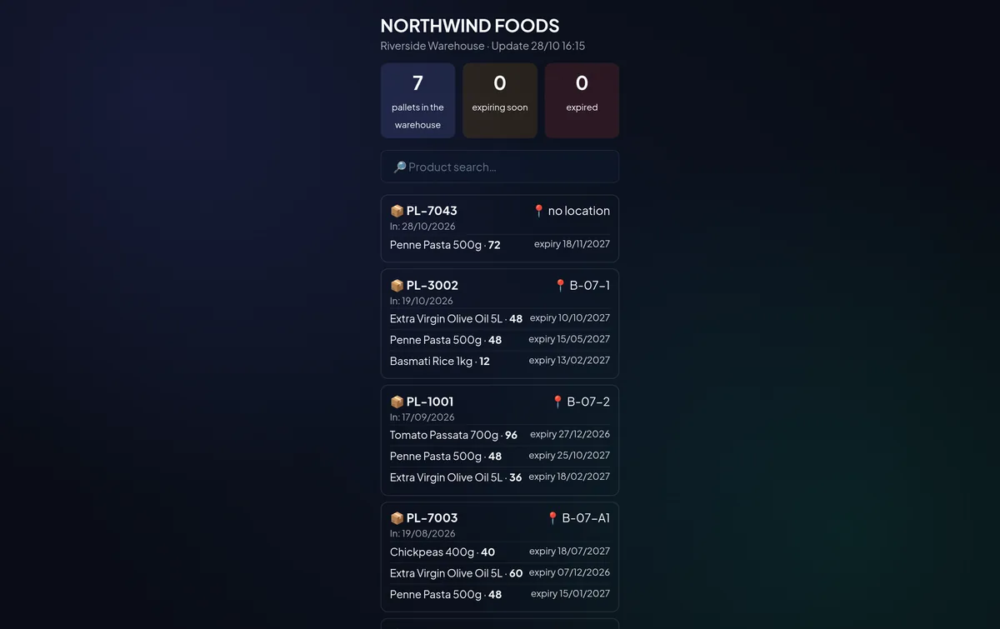
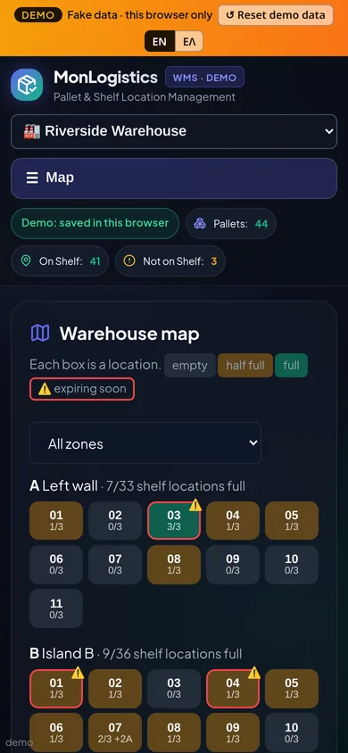

For business
MonLogistics WMS: simple pallet warehouse management from your phone
Pallets, expiry dates, shelf locations, picking and QR scanning in one simple app, with no special scanners and no heavy warehouse system.
The demo uses test data. It is in English, with an ΕΛ option for Greek.
Who it's for
- Small and mid-size warehousesthat want order in their pallets and locations, without a big system.
- 3PL providerscompanies that store goods on behalf of their clients.
- Food, beverage and FMCG distributorswhose products have expiry dates.
- Teams still working with Excel or paperwho want something more organised.
The app
Sample screens with test data.
-

Pallets and search -

Warehouse map -

Picking with FEFO suggestion -

Dashboard -

Client portal -

On your phone
What it does
- Pallets with products and expiry dates, highlighting those that expire soon.
- Shelf and aisle locations and a warehouse map.
- Stock moves and stock counts.
- Search for a product across all pallets.
- Exports with history.
- Picking with order import from Excel, CSV or PDF and a pallet suggestion using FEFO (first-expired, first-out).
- QR scanning with the phone camera, no special scanners needed.
- Printing of QR labels and picking lists.
- Dashboard.
- Client portal: a private link where a client sees only their own stock.
- Administrator and Employee roles.
- Keeps working through connection gaps and sends your changes when the internet returns.
- Installs like an app on a phone or PC.
Try it
See the demo with test data, or request a short walkthrough.